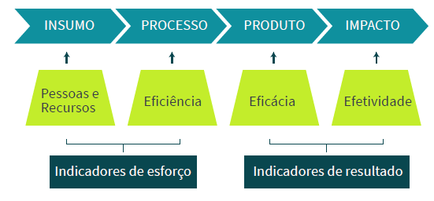
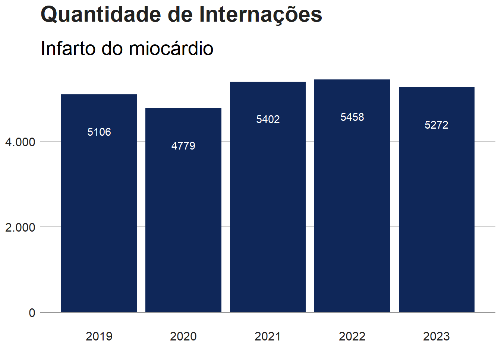
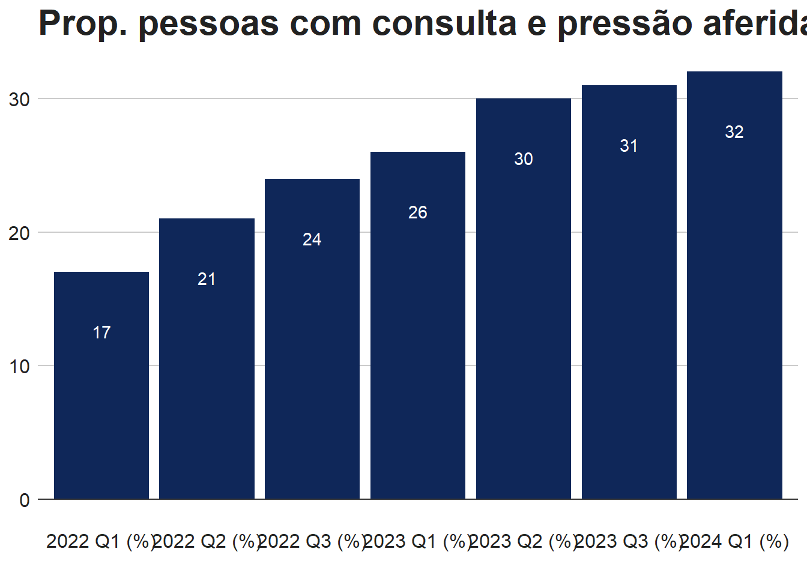

Gestão para Resultados (GpR) na Administração Pública
A Gestão para Resultados (GpR) é uma abordagem que busca alinhar as ações do governo a resultados concretos e mensuráveis, priorizando o impacto social e o uso eficiente de recursos públicos. A GpR representa uma evolução da administração pública, ao colocar foco não apenas na execução de atividades, mas nos efeitos que essas ações geram para a sociedade.
Principais Conceitos da GpR
Resultados vs. Outputs
Outputs são produtos ou serviços entregues, como o número de consultas médicas realizadas.
Resultados são os impactos concretos dessas entregas, como a melhoria na saúde da população.
Impacto
Refere-se aos efeitos de longo prazo das políticas públicas, como a redução da mortalidade infantil ou o aumento da expectativa de vida.
Indicadores
Ferramentas essenciais para medir o desempenho das políticas e monitorar se os objetivos estão sendo atingidos.
Tipos de Indicadores:
Impacto: Mede resultados de longo prazo (ex.: melhoria na qualidade de vida).
Resultado: Foca nos efeitos imediatos ou de médio prazo (ex.: diminuição da taxa de doenças).
Processo: Avalia a execução das atividades (ex.: número de consultas realizadas).
Cadeia de Valor na GpR
A cadeia de valor é uma ferramenta que ajuda a entender como os recursos (entradas) são transformados em serviços (saídas) que resultam em impactos sociais (resultados e impactos). É composta pelas seguintes etapas:
Entradas (Inputs/Insumos): Recursos como orçamento, pessoal e infraestrutura.
Processos: Atividades que utilizam esses recursos, como campanhas de vacinação ou atendimento médico.
Saídas (Outputs): Produtos entregues, como vacinas aplicadas ou consultas realizadas.
Resultados (Outcomes): Efeitos imediatos e de médio prazo, como a redução da incidência de doenças.
Impactos: Mudanças de longo prazo na vida da população, como a melhoria da expectativa de vida.
Dimensões de Desempenho
Para avaliar a eficiência das políticas públicas, a GpR utiliza várias dimensões de desempenho:
Eficiência: Relação entre recursos utilizados e os resultados obtidos (ex.: custo por paciente atendido).
Eficácia: Grau de cumprimento das metas estabelecidas (ex.: percentual de vacinas aplicadas).
Efetividade: Impacto das ações na sociedade (ex.: redução de mortalidade infantil).
Execução: Cumprimento das atividades conforme planejado (ex.: percentual de ações realizadas no prazo).
Excelência: Qualidade e boas práticas na execução dos serviços públicos.
Benefícios e Desafios da GpR
Benefícios:
Maior transparência: A GpR melhora a responsabilização ao focar em resultados claros e públicos.
Otimização de recursos: Usa de maneira eficiente os recursos públicos, evitando desperdícios e maximizando o impacto social.
Desafios:
Cultural: Implementar a GpR requer uma mudança de mentalidade nas organizações públicas, que muitas vezes priorizam o controle de processos em vez de resultados.
Coleta de dados confiáveis: A implementação eficaz da GpR depende de sistemas de coleta de dados robustos e precisos.
Gestão para Resultados e Valor Público
A Gestão para Resultados (GpR) está intimamente ligada ao conceito de Valor Público, um modelo amplamente disseminado pelo professor Mark Moore. O valor público redefine o sucesso no setor público, deslocando o foco da simples entrega de serviços para a criação de valor real para a sociedade. Enquanto no setor privado o valor é medido por lucros e benefícios para acionistas, no setor público, o valor é medido pela melhoria da qualidade de vida dos cidadãos e pelo atendimento às necessidades coletivas.
O que é Valor Público? O Valor Público é gerado quando as ações governamentais:
Atendem de forma eficaz às necessidades da população. Utilizam os recursos públicos de forma eficiente e justa. São percebidas como legítimas pela população, o que aumenta a confiança nos processos e instituições públicas. A criação de valor público exige que as políticas públicas não apenas resolvam problemas imediatos, mas também promovam mudanças sustentáveis e de longo prazo na vida dos cidadãos.
Como a GpR Gera Valor Público? A Gestão para Resultados contribui diretamente para a geração de valor público ao:
Estabelecer metas claras e mensuráveis: Isso permite que o governo foque no impacto das suas ações e no cumprimento das necessidades reais da população. Utilizar indicadores de desempenho: Esses indicadores são fundamentais para avaliar se as políticas estão produzindo os resultados esperados, garantindo que os recursos públicos sejam bem aplicados. Monitorar e ajustar ações: A GpR exige sistemas contínuos de monitoramento, o que permite que as políticas públicas sejam ajustadas conforme necessário, garantindo a melhoria contínua e a entrega de valor. Os Três Pilares do Valor Público A GpR articula três pilares principais do Valor Público:
Legitimidade e Suporte:
A GpR fortalece a confiança da população no governo por meio de transparência e responsabilização. Ao adotar processos participativos e divulgando resultados, o governo garante que as políticas públicas sejam vistas como legítimas e alinhadas às expectativas sociais. Capacidade Operacional:
A GpR melhora a capacidade de implementação das políticas públicas ao garantir que os órgãos governamentais possuam as ferramentas, os recursos e a organização necessários para alcançar os resultados esperados. Por meio de indicadores de desempenho e sistemas de monitoramento, o governo consegue identificar gargalos e ajustar suas ações de forma ágil e eficaz. Valor Substantivo:
O valor substantivo refere-se ao impacto real das políticas públicas. A GpR permite que o governo avalie continuamente o impacto de suas ações, garantindo que elas estejam alinhadas às necessidades reais da sociedade e produzam melhorias tangíveis na vida dos cidadãos. Exemplo: melhorar a saúde pública, reduzir a criminalidade ou aumentar a educação de qualidade.
O que são Indicadores?
Na gestão pública, os indicadores são instrumentos que contribuem para identificar e medir aspectos relacionados a um determinado fenômeno decorrente da ação ou da omissão do Estado. Sua principal finalidade é traduzir, de forma mensurável, um aspecto da realidade dada ou construída, de maneira a tornar operacional a sua observação e avaliação. Dessa forma os indicadores servem para:
mensurar os resultados e gerir o desempenho;
embasar a análise crítica dos resultados obtidos e do processo de tomada decisão;
contribuir para a melhoria contínua dos processos organizacionais;
facilitar o planejamento e o controle do desempenho; e
viabilizar a análise comparativa do desempenho da organização e do desempenho de diversas organizações atuantes em áreas ou ambientes semelhantes.
O desempenho pode ser compreendido como esforços empreendidos na direção de resultados a serem alcançados.
desempenho = esforços + resultados
Tipos de indicadores
Os indicadores de desempenho poder ser agrupados em duas dimensões: Indicadores de Esforço e Indicadores de Resultado.
Indicadores de Esforço
É um indicador que pode ser gerenciado pela cobrança, já que exige um esforço específico capaz de construir outro indicador maior.
Indicadores de Resultado
É um indicador menos gerenciável e que se origina da expectativa do gestor. São os indicadores de esforço que constroem os indicadores de resultados. Ambos são imprescindíveis para medir o desempenho de uma organização. Um sistema de medição deve ser formado por indicadores de resultado e de esforço e que a mescla entre eles é a chave para a estruturação de um sistema balanceado.
INDICADORES DE ESFORÇO
INDICADORES DE RESULTADOS
Permite a verificar a causa antes de o efeito acontecer
Permite a mensuração do efeito após um certo tempo
Possibilita verificar se os planos relacionados aos fatores críticos de sucesso estão sendo cumpridos
Possibilitar a verificação se os objetivos estão sendo atingidos
Adequado para a medição de planos de ação, projetos e iniciativas
Adequado para a medição final do alcance dos objetivos
A figura abaixo, retrata a cadeia de produção de valor sob a perspectiva dos indicadores de esforço e resultado.

Indicadores de insumo
pretendem mensurar os recursos pessoais, materiais e financeiros utilizados, não são capazes de indicar o cumprimento de objetivos finais.
Indicadores de processo
pretendem mensurar o desempenho de ações/atividades na geração de produtos ou serviços, medem a eficiência do processo.
Indicadores de produto
pretendem mensurar os bens e serviços produzidos como resultado da combinação de um conjunto de insumos, mediante determinado processo. Apontam a eficácia, ou seja, a capacidade de alcançar as metas e objetivos planejados.
Indicadores de impacto
pretendem mensurar a capacidade de cumprir os objetivos almejados, ou seja à efetividade das ações realizadas no cumprimento do planejamento.
SAÚDE INTEGRA PE - GESTÃO PARA RESULTADOS NA SAÚDE DE PERNAMBUCO
Marco Lógico
O Marco Lógico é uma ferramenta de planejamento e gestão de projetos amplamente utilizada pelo Banco Interamericano de Desenvolvimento (BID) para garantir a clareza e eficácia na execução de iniciativas. Ele organiza de forma sistemática os objetivos, resultados, atividades e recursos de um projeto, permitindo identificar indicadores de sucesso e as hipóteses ou riscos associados. Esse método facilita o monitoramento e avaliação do impacto, promovendo a transparência e a responsabilização na gestão pública e no uso de recursos financeiros.
OBJETIVO ESTRATÉGICO
SAÚDE E QUALIDADE DE VIDA - AUMENTAR A EXPECTATIVA MÉDIA DE VIDA DO CIDADÃO PERNAMBUCANO
DIMENSÕES
ASSEGURAR O DESENVOLVIMENTO DA POLÍTICA PÚBLICA DE SAÚDE DE FORMA REGIONALIZADA E INTEGRADA COM OS MUNICÍPIOS
METAS PRIORITÁRIAS
ATENÇÃO PRIMÁRIA RESOLUTIVA AS CONDIÇÕES DE SAÚDE DA POPULAÇÃO
AÇÃO
APOIAR INSTITUCIONALMENTE AS SECRETARIAS MUNICIPAIS DE SAÚDE PARA O FORTALECIMENTO REGIONAL DO ESTADO.
Na tabela temos um extrato do Marco Lógico do Saúde Integra PE, que pretende integrar para fins de planejamento, os objetivos propostos no Plano de Governo, no Plano Plurianual (PPA) e no Plano Estadual de Saúde (PES). Vamos fazer o exercício de traduzir o marco lógico num instrumento de monitoramento e avaliação através da construção de indicadores. Como podemos alcançar o Objetivo Estratégico “Aumentar a expectativa de vida média de vida do cidadão pernambucana”?
O passo mais lógico seria desenvolver ações que reduzam a mortalidade dos pernambucanos. Sendo assim, a escolha de um indicador que reflita a mortalidade dos cidadãos pernambucanos parece ser uma boa escolha como Indicador de Impacto. Vamos começar a nos desbruçar sobre os dados. Vamos tabular as principais causas de mortalidade em Pernambuco, utilizando o princípio de Pareto (80% do resultado é produzido por 20% das causas).
Numa análise rápida, podemos identificar que as principais causas de mortalidade são Infarto agudo do miocárdio, Diabetes Melittus, Agressões por arma de fogo, Hipertensão essencial e Pneumonia. Se agruparmos por Capítulo do CID vamos observar que as neoplasias também representam um grupo de causas relevantes. Definidas as principais causas, podemos avançar na construção dos Indicadores de Resultado. Partindo da principal causa de mortalidade, Infarto agudo do miocárdio, vamos identificar uma medida que quantifique este fenômeno. Podemos pensar no número de internações por esta morbidade como uma opção, vamos tabular os dados.
internacoes_infarto =data.frame("Ano"=c(2019:2023),"Internações"=c(5106,4779,5402,5458,5272))# Tabela População Total por Faixa de IVSggplot(internacoes_infarto, aes(x =`Ano`, y =`Internações`)) +geom_bar(stat="identity", position="identity", fill="#0F2759") +geom_hline(yintercept =0, colour="#333333") +geom_text(aes(label = Internações),colour ="white",vjust =+5) +labs(title="Quantidade de Internações" ,subtitle ="Infarto do miocárdio" ) +ig_style() +scale_y_continuous(labels =comma_format(big.mark =".",decimal.mark =","))
Warning: The `legend.text.align` argument of `theme()` is deprecated as of ggplot2
3.5.0.
ℹ Please use theme(legend.text = element_text(hjust)) instead.

Já temos nosso Indicador de Resultado Quantidade de internações por infarto agudo do miocárdio, esperamos que as ações planejadas reduzam o número de internações e consequentemente, o número de óbitos por esta infermidade.
Uma das ações que podem ser planejadas é fortalecer o acompanhamento das pessoas com hipertensão na atenção primária. Já temos nosso Indicador de Processo, Proporção de pessoas com hipertensão, com consulta e pressão arterial aferida no semestre. Vamos observar os dados.
internacoes_infarto =data.frame("Ano"=c("2022 Q1 (%)", "2022 Q2 (%)", "2022 Q3 (%)", "2023 Q1 (%)", "2023 Q2 (%)", "2023 Q3 (%)", "2024 Q1 (%)"),"Internações"=c(17, 21, 24, 26, 30, 31, 32))# Tabela População Total por Faixa de IVSggplot(internacoes_infarto, aes(x =`Ano`, y =`Internações`)) +geom_bar(stat="identity", position="identity", fill="#0F2759") +geom_hline(yintercept =0, colour="#333333") +geom_text(aes(label = Internações),colour ="white",vjust =+5) +labs(title="Prop. pessoas com consulta e pressão aferida") +ig_style() +scale_y_continuous(labels =comma_format(big.mark =".",decimal.mark =","))

Agora já temos nosso sistema de indicadores completo, vamos visualizar como ficou o nosso fluxo de monitoramento e avaliação do desempenho no extrato do Marco Lógico.